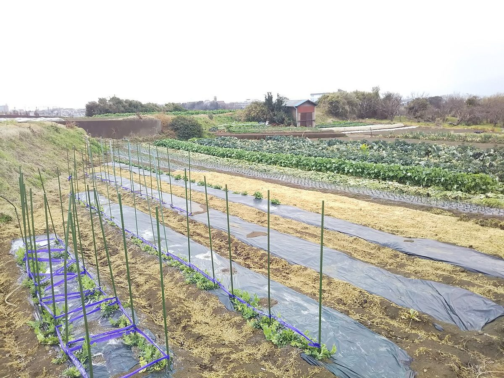
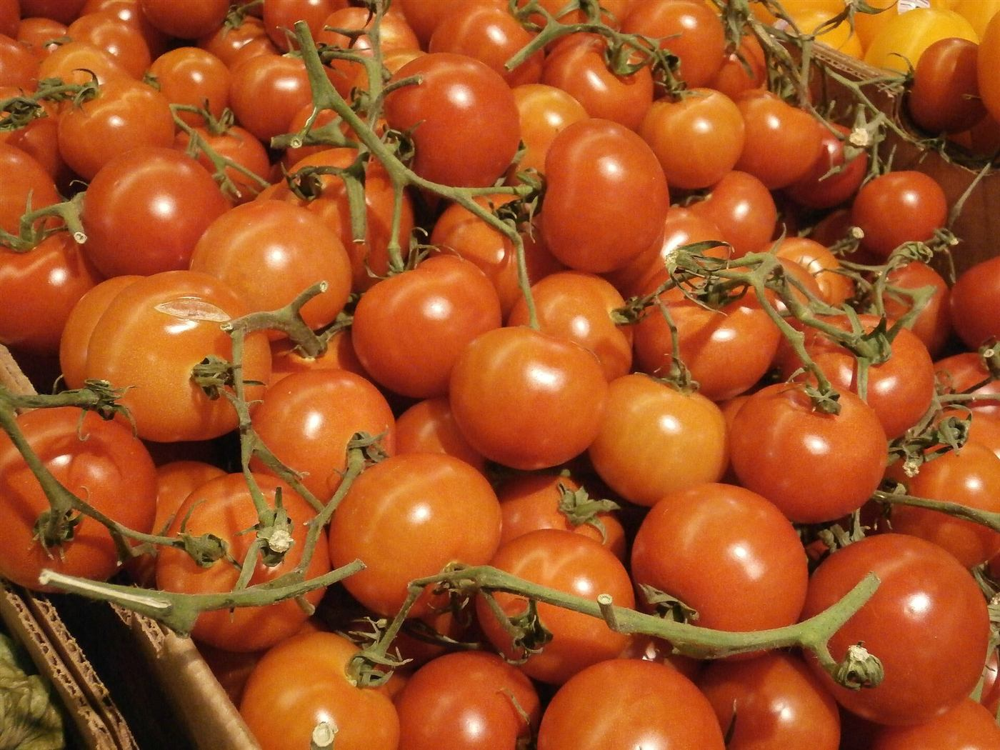
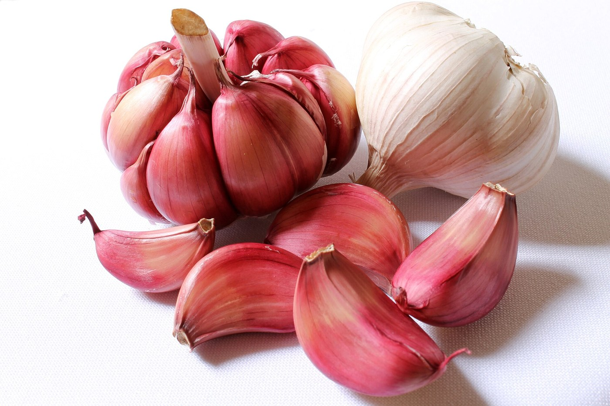
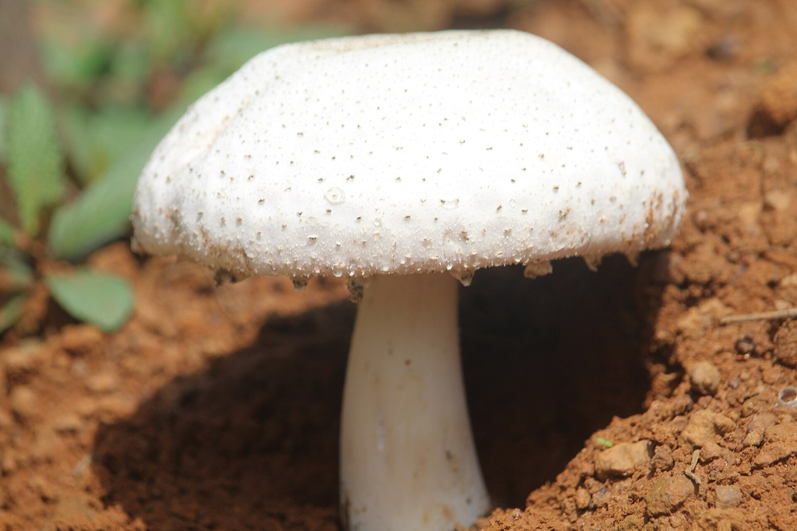
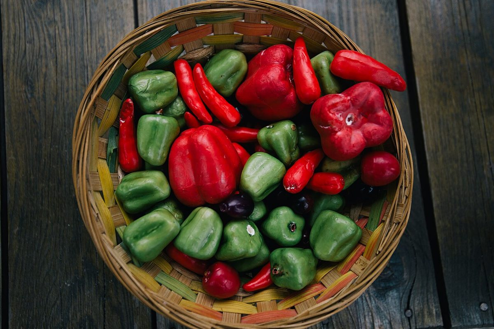
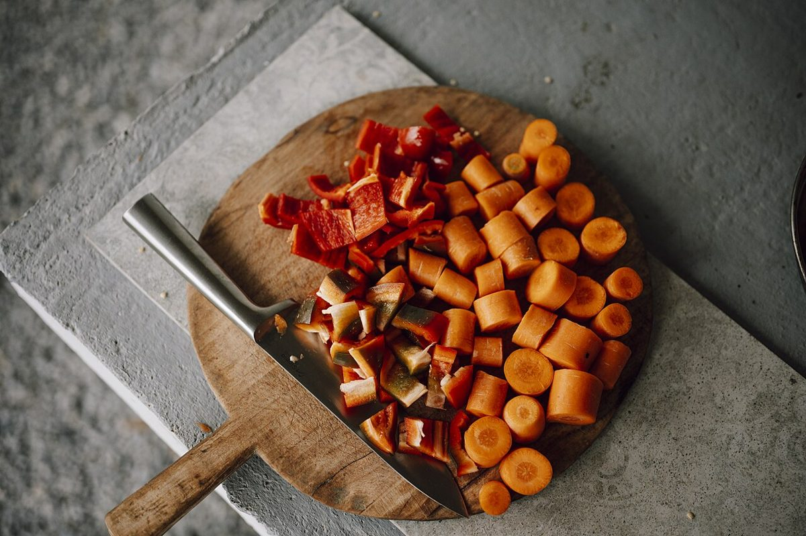
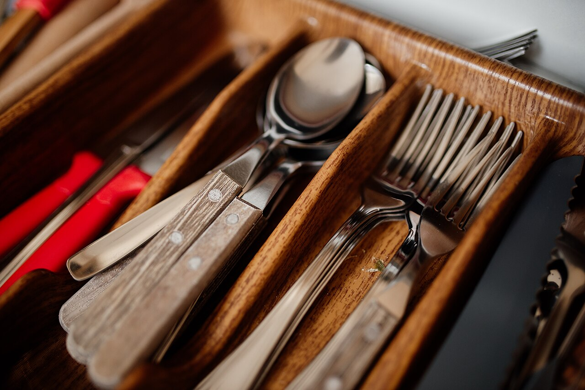
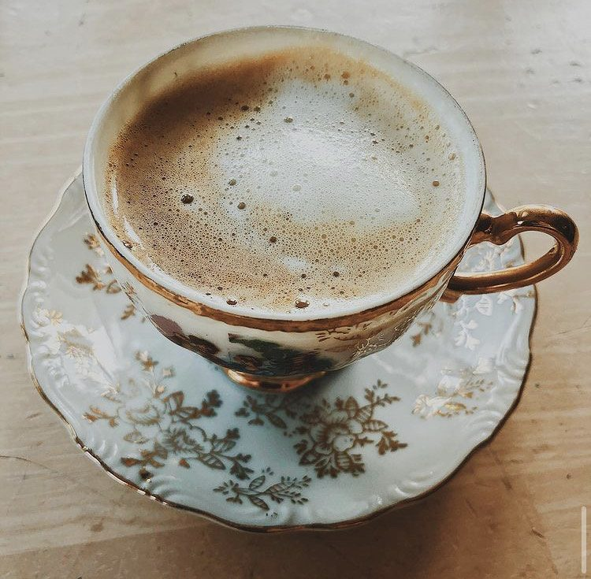

山口市滝町・坂の上の古民家カフェ
畑の恵みを、
ていねいに、お弁当に。
Rubino cafeは、古い民家を改装した隠れ家のようなカフェ。旬の野菜と二十穀米のお弁当が看板です。
ABOUT
お店のこと
紹介記事によると、Rubino cafeは山口県警察本部の横の細い坂道を上がったところにある、古民家をリノベーションした隠れ家カフェです。旬の野菜と二十穀米を使った、ヘルシーでボリュームのあるお弁当が看板とされています。
情報源: TRYANGLE YAMAGUCHI(2020年の紹介記事) / Instagram
店名の意味やオーナーの想いは確認できていないため記載していません。見出しの言い回しは制作側のイメージです。記事の情報は古い可能性があります。最新の営業状況はInstagramでご確認ください。












写真はフリー素材のイメージで、お店の実際の様子ではありません。
VOICE
口コミ
イメージ例
野菜がたっぷりで、食べ終わったあとも体が軽い気がしました。ごはんのもちもち感も好きです。
イメージ例
坂を上った先の古い家の雰囲気が落ち着きます。ゆっくりお昼を過ごせました。
イメージ例
お弁当を予約して受け取りました。彩りがきれいで、日替わりなのも楽しみです。
上記は制作側が作成したイメージ例で、実際のお客様の声ではありません。